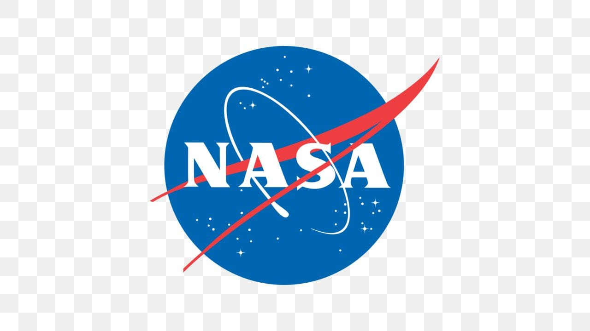
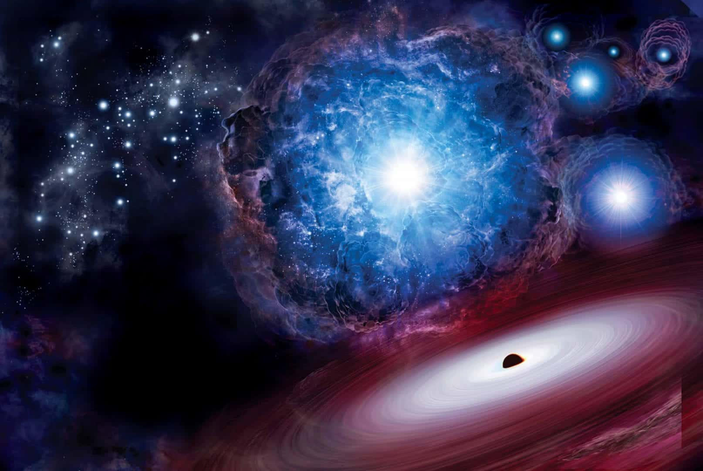
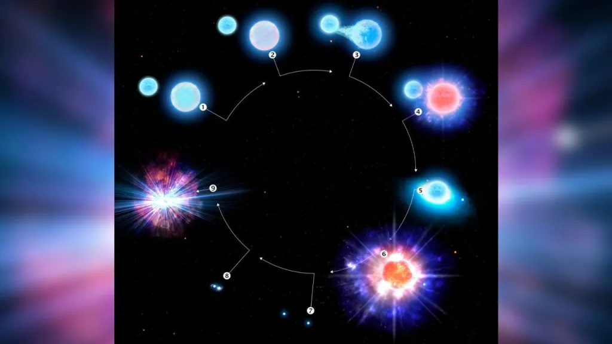

Sobre a Nasa
Nasa Tv
Supernova revela raro par de estrelas na Via Láctea que pode liberar ouro no espaço

Um sistema estelar incomum criou mais efervescência e menos estrondo quando explodiu em uma supernova. A explosão sem brilho, conhecida como supernova “ultra-despojada”, levou os pesquisadores a descobrir as duas estrelas a 11 mil anos-luz da Terra. É a primeira detecção confirmada de um sistema estelar que um dia criará uma quilonova – quando estrelas de nêutrons colidem e explodem, liberando ouro e outros elementos pesados no espaço. Acredita-se que o par estelar raro seja um dos apenas cerca de 10 semelhantes na galáxia da Via Láctea. A descoberta demorou a chegar. Em 2016, o Observatório Neil Gehrels Swift da Nasa detectou um grande flash de luz de raios-X, que se originou na mesma região do céu onde uma estrela quente e brilhante do tipo Be estava localizada. Os astrônomos estavam curiosos para saber se os dois poderiam estar ligados, então os dados foram capturados usando o telescópio de 1,5 metros do Observatório Interamericano Cerro Tololo no norte do Chile. Um dos interessados em usar esses dados para aprender mais sobre a estrela foi o Dr. Noel D. Richardson, agora professor assistente de física e astronomia na Embry-Riddle Aeronautical University.
Em 2019, Clarissa Pavao, estudante de graduação da universidade, abordou Richardson durante sua aula de astronomia para perguntar se ele tinha algum projeto em que ela pudesse trabalhar para ganhar experiência com pesquisa em astronomia. Ele compartilhou os dados do telescópio com ela e, ao longo da pandemia, Pavao aprendeu a trabalhar com os dados do telescópio no Chile e limpá-los para reduzir a distorção. “O telescópio olha para uma estrela e absorve toda a luz para que você possa ver os elementos que compõem essa estrela – mas as estrelas Be tendem a ter discos de matéria ao seu redor”, disse Pavao. “É difícil ver diretamente através de todas essas coisas.” Ela enviou seus resultados iniciais – que se assemelhavam a um gráfico de dispersão – para Richardson, que reconheceu que ela havia fixado uma órbita para o sistema de estrela dupla. Observações de acompanhamento os ajudaram a verificar a órbita do sistema estelar binário, chamado CPD-29 2176. Mas essa órbita não era o que eles esperavam. Normalmente, as estrelas binárias giram em torno umas das outras em uma órbita oval. No CPD-29 2176, uma estrela orbita a outra em um padrão circular que se repete a cada 60 dias. As duas estrelas, uma maior e outra menor, giravam uma em torno da outra em uma órbita muito próxima. Com o tempo, a estrela maior começou a liberar seu hidrogênio, liberando material para a estrela menor, que cresceu de 8 ou 9 vezes a massa do nosso sol para 18 ou 19 vezes a massa do nosso sol, disse Richardson.
Para fins de comparação, a massa do nosso sol é 333 mil vezes a da Terra.

A estrela principal tornou-se cada vez menor enquanto construía a estrela secundária – e quando esgotou todo o seu combustível, não havia o suficiente para criar uma supernova massiva e energética para liberar seu material restante no espaço. Em vez disso, a explosão foi como acender um fogo de artifício. “A estrela estava tão esgotada que a explosão nem sequer teve energia suficiente para chutar sua órbita para a forma elíptica mais típica vista em binários semelhantes”, disse Richardson. O que restou após a supernova ultradespojada foi um remanescente denso conhecido como estrela de nêutrons, que agora orbita a estrela massiva em rápida rotação. O par estelar permanecerá em uma configuração estável por cerca de 5 a 7 milhões de anos. Como a massa e o momento angular foram transferidos para a estrela Be, ela libera um disco de gás para manter o equilíbrio e garantir que não se desfaça. Eventualmente, a estrela secundária também queimará seu combustível, expandirá e liberará material como a primeira. Mas esse material não pode ser facilmente empilhado na estrela de nêutrons; portanto, o sistema estelar liberará o material pelo espaço. A estrela secundária provavelmente experimentará uma supernova sem brilho semelhante e se transformará em uma estrela de nêutrons. Com o tempo – ou seja, provavelmente alguns bilhões de anos – as duas estrelas de nêutrons se fundirão e eventualmente explodirão em uma quilonova, liberando elementos pesados como ouro no universo.
“Esses elementos pesados nos permitem viver da maneira que fazemos. Por exemplo, a maior parte do ouro foi criada por estrelas semelhantes à relíquia da supernova ou estrela de nêutrons no sistema binário que estudamos. A astronomia aprofunda nossa compreensão do mundo e nosso lugar nele”, disse Richardson. “Quando olhamos para esses objetos, estamos olhando para trás no tempo”, disse Pavao. “Conhecemos mais sobre as origens do universo, o que nos dirá para onde nosso sistema solar está indo. Como humanos, começamos com os mesmos elementos dessas estrelas.” Um estudo detalhando suas descobertas publicado nesta quarta-feira (1º) na revista Nature. Richardson e Pavao também trabalharam com o físico Jan J. Eldridge, da Universidade de Auckland, na Nova Zelândia, especialista em sistemas estelares binários e sua evolução. Eldridge revisou milhares de modelos de estrelas binárias e estimou que provavelmente existem apenas 10 em toda a Via Láctea semelhantes ao de seu estudo. Em seguida, os pesquisadores querem aprender mais sobre a própria estrela Be e esperam realizar observações de acompanhamento usando o Telescópio Espacial Hubble. Pavao também pretende se formar – e continuar a trabalhar na pesquisa de física espacial usando as novas habilidades que adquiriu. “Nunca pensei que estaria trabalhando na história evolutiva de sistemas estelares binários e supernovas”, disse Pavao. “Tem sido um projeto incrível.”